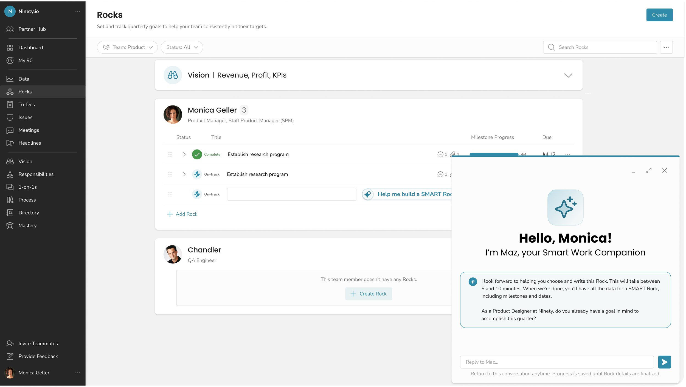

Overview
The hardest part of quarterly planning is starting
Ninety is built around the Entrepreneurial Operating System (EOS®) — a framework where leadership teams set quarterly priorities called “Rocks.” Rocks are supposed to be SMART: specific, measurable, actionable goals with clear milestones. In practice, they rarely started that way.
Users wrote vague Rock titles, forgot due dates, skipped milestones, and then leaned on their EOS implementers or coaches to fix them in the quarterly meeting. The feedback from coaches was consistent:
“It took a year before people consistently made SMART Rocks. Everyone pushed it off until the last minute.” — Client, confidential
The opportunity was to bring the coaching conversation into the product itself — letting Maz, Ninety’s AI agent, ask the same reflective questions a good EOS coach would ask, right at the moment of creation.
The Problem
Vague goals compound. Every bad Rock is a coaching session waiting to happen.
The Rock creation experience was a blank form: a title field, a due date, a milestone section. Nothing guided users toward specificity, nothing prompted them to think through measurability, and nothing caught ambiguity before the quarterly session surfaced it.
Four failure modes showed up consistently in research:
My Role
Lead Product Designer, discovery through ship
I led design for Draft Rocks with Maz end to end, partnering with the PM and engineering team throughout:
The Solution
A coach in the creation flow, not a form with more fields
Draft Rocks with Maz is a guided, conversational experience that opens inside the existing Rock creation entry points. Instead of a blank form, users get a conversation: Maz asks reflective EOS-style questions — “What does success look like by the end of the quarter?” — and as the answers come in, it auto-fills the Rock title, due date, and milestones.
The core design principles:
Design Details
From blank form to guided conversation
The existing Rock creation entry point — an inline text input — needed to surface the option to use Maz without forcing it. I designed the affordance as a light touch: an AI assist option that appears alongside the existing inline add, so users who want to go straight to the form can, and users who want coaching can opt in.

Once in the coaching conversation, Maz works through the Rock structure progressively: first grounding the user in the goal, then specificity, then how to measure it, then breaking it into milestones. As responses come in, the structured fields auto-populate in the background — so when the conversation ends, the Rock is ready to save.
Outcomes
A coaching conversation that converts
The feature shipped as part of Maz’s broader launch at Ninety. It extended the Terra design system’s chat patterns and token architecture — a direct continuation of the design system work that preceded it.
Reflection
What this taught me about AI-assisted creation
The AI’s job is to ask better questions, not give better answers
The instinct with generative AI features is to have the AI produce an output — “generate a Rock for me.” What research showed was that users didn’t trust AI-generated goals because they didn’t feel ownership over them. Maz’s job isn’t to write the Rock; it’s to ask the questions that lead the user to write a better one themselves. That distinction — AI as coach versus AI as author — shaped every design decision in the feature.
This project is also where I developed the interaction patterns that I now think of as human-in-the-loop by design: the AI proposes, the user confirms, the AI executes. The stop button, the progress preservation, the opt-in entry point — these aren’t just UX polish; they’re the design expression of a philosophy about how people should stay in control of AI-assisted work.
Draft Rocks with Maz was built on the Terra design system and fed directly into the AI patterns I now apply at Constant Contact — where the same question keeps coming up: how much should the AI do, and when does it need to hand control back to the human?